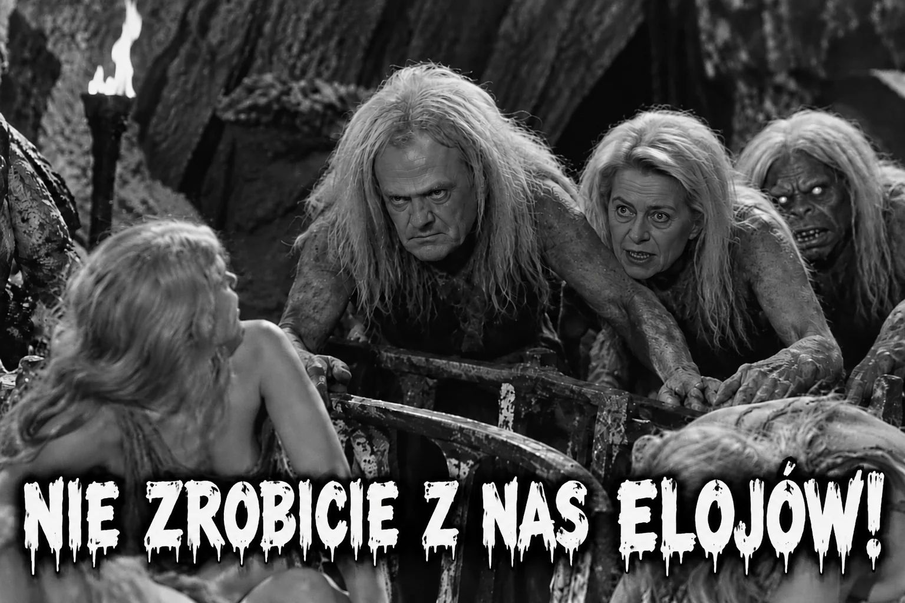
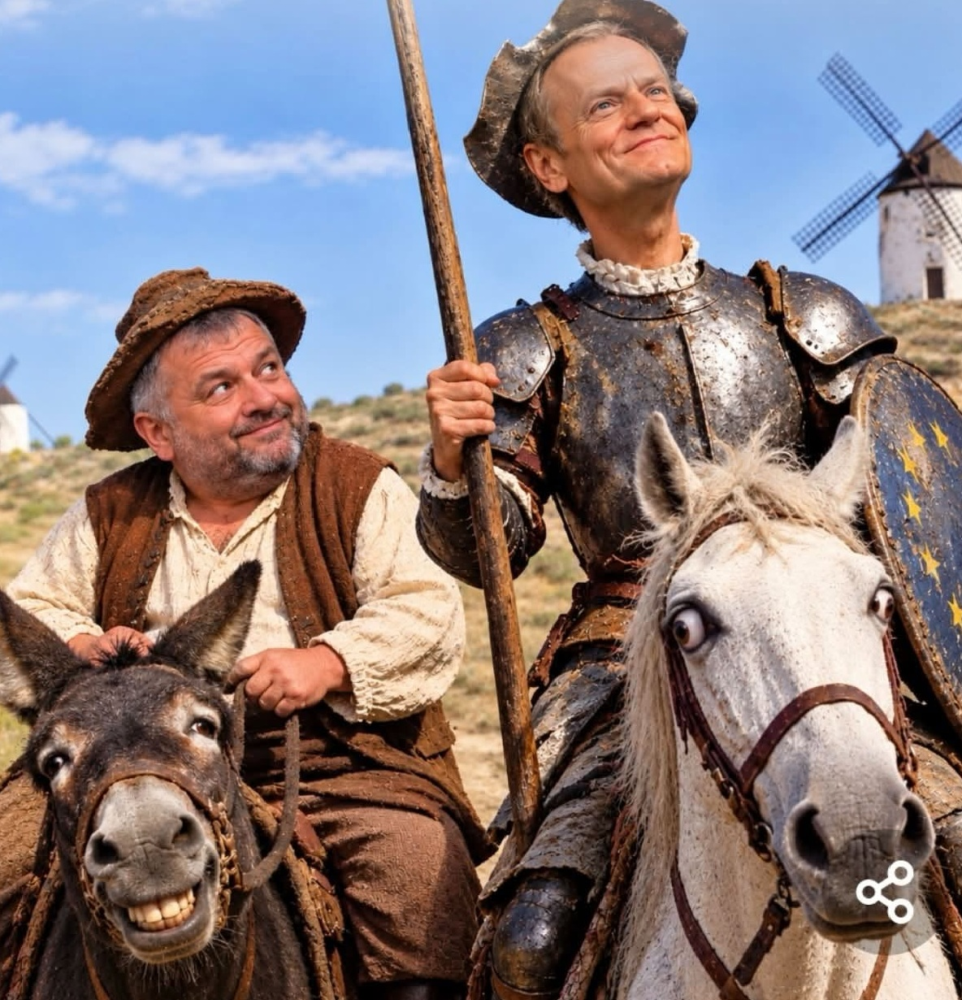

Lewica to poglądy polityczne, a „lewactwo” to określenie fanatyzmu, zakłamania i narzucania innym własnych, wynaturzonych i zwyrodniałych poglądów.


Muzyka do Don Kichota: „Sancho Panza gets a Latte” — Kevin MacLeod (incompetech.com), licencja CC BY 3.0. Odtwarzana z zewnętrznego serwera.
Muzyka: „Seven March” — Kevin MacLeod (incompetech.com), licencja CC BY 4.0. Odtwarzana z zewnętrznego serwera.
Hymn Niemiec — wersja instrumentalna, United States Navy Band, nagranie udostępnione w Wikimedia Commons (domena publiczna).